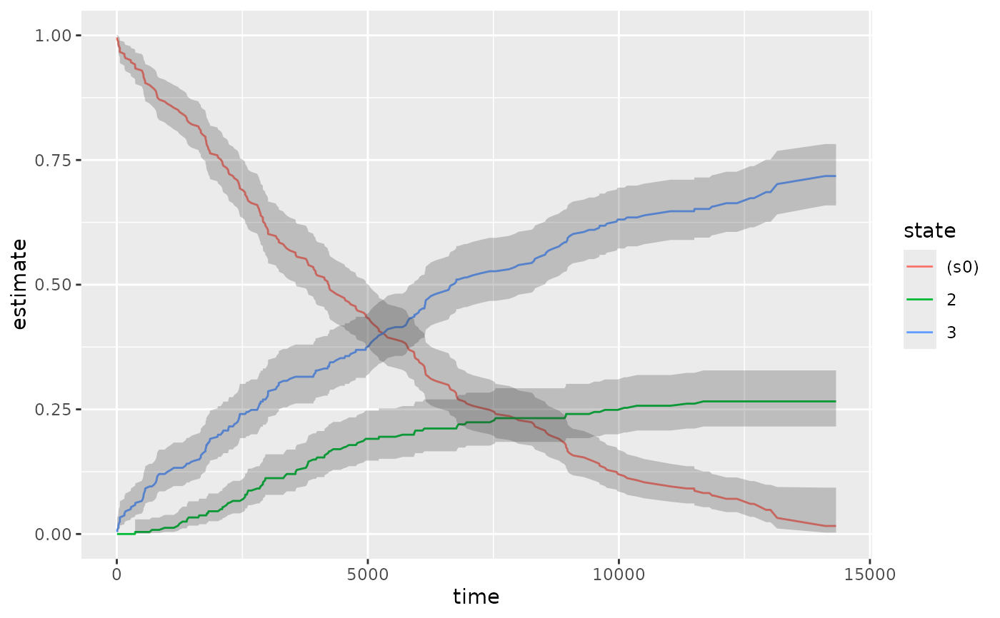

Tidy summarizes information about the components of a model. A model component might be a single term in a regression, a single hypothesis, a cluster, or a class. Exactly what tidy considers to be a model component varies across models but is usually self-evident. If a model has several distinct types of components, you will need to specify which components to return.
# S3 method for survfit tidy(x, ...)
Arguments
| x | An |
|---|---|
| ... | Additional arguments. Not used. Needed to match generic
signature only. Cautionary note: Misspelled arguments will be
absorbed in |
See also
Other survival tidiers:
augment.coxph(),
augment.survreg(),
glance.aareg(),
glance.cch(),
glance.coxph(),
glance.pyears(),
glance.survdiff(),
glance.survexp(),
glance.survfit(),
glance.survreg(),
tidy.aareg(),
tidy.cch(),
tidy.coxph(),
tidy.pyears(),
tidy.survdiff(),
tidy.survexp(),
tidy.survreg()
Value
A tibble::tibble() with columns:
Upper bound on the confidence interval for the estimate.
Lower bound on the confidence interval for the estimate.
Number of censored events.
Number of events at time t.
Number of individuals at risk at time zero.
The standard error of the regression term.
Point in time.
estimate of survival or cumulative incidence rate when multistate
state if multistate survfit object input
strata if stratified survfit object input
Examples
library(survival) cfit <- coxph(Surv(time, status) ~ age + sex, lung) sfit <- survfit(cfit) tidy(sfit)#> # A tibble: 186 x 8 #> time n.risk n.event n.censor estimate std.error conf.high conf.low #> <dbl> <dbl> <dbl> <dbl> <dbl> <dbl> <dbl> <dbl> #> 1 5 228 1 0 0.996 0.00419 1 0.988 #> 2 11 227 3 0 0.983 0.00845 1.00 0.967 #> 3 12 224 1 0 0.979 0.00947 0.997 0.961 #> 4 13 223 2 0 0.971 0.0113 0.992 0.949 #> 5 15 221 1 0 0.966 0.0121 0.990 0.944 #> 6 26 220 1 0 0.962 0.0129 0.987 0.938 #> 7 30 219 1 0 0.958 0.0136 0.984 0.933 #> 8 31 218 1 0 0.954 0.0143 0.981 0.927 #> 9 53 217 2 0 0.945 0.0157 0.975 0.917 #> 10 54 215 1 0 0.941 0.0163 0.972 0.911 #> # … with 176 more rows#> # A tibble: 1 x 10 #> records n.max n.start events rmean rmean.std.error median conf.low conf.high #> <dbl> <dbl> <dbl> <dbl> <dbl> <dbl> <dbl> <dbl> <dbl> #> 1 228 228 228 165 381. 20.3 320 285 363 #> # … with 1 more variable: nobs <int>library(ggplot2) ggplot(tidy(sfit), aes(time, estimate)) + geom_line() + geom_ribbon(aes(ymin = conf.low, ymax = conf.high), alpha = .25)# multi-state fitCI <- survfit(Surv(stop, status * as.numeric(event), type = "mstate") ~ 1, data = mgus1, subset = (start == 0) ) td_multi <- tidy(fitCI) td_multi#> # A tibble: 711 x 9 #> time n.risk n.event n.censor estimate std.error conf.high conf.low state #> <dbl> <int> <int> <int> <dbl> <dbl> <dbl> <dbl> <chr> #> 1 6 241 0 0 0.996 0.00414 1 0.988 (s0) #> 2 7 240 0 0 0.992 0.00584 1 0.980 (s0) #> 3 31 239 0 0 0.988 0.00714 1 0.974 (s0) #> 4 32 238 0 0 0.983 0.00823 1.00 0.967 (s0) #> 5 39 237 0 0 0.979 0.00918 0.997 0.961 (s0) #> 6 60 236 0 0 0.975 0.0100 0.995 0.956 (s0) #> 7 61 235 0 0 0.967 0.0115 0.990 0.944 (s0) #> 8 152 233 0 0 0.963 0.0122 0.987 0.939 (s0) #> 9 153 232 0 0 0.959 0.0128 0.984 0.934 (s0) #> 10 174 231 0 0 0.954 0.0134 0.981 0.928 (s0) #> # … with 701 more rowsggplot(td_multi, aes(time, estimate, group = state)) + geom_line(aes(color = state)) + geom_ribbon(aes(ymin = conf.low, ymax = conf.high), alpha = .25)